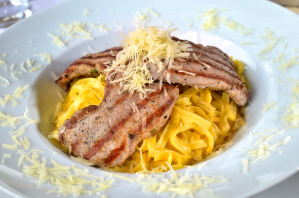

Task 1: Introduction to meat and offal
Further instructions here to be confirmed.
Further instructions here to be confirmed.
In many countries, meat is a common source of protein and the main ingredient of many dishes. Good knife skills and good knowledge of meat will help when creating exciting dishes which will attract customers.
In terms of nutrition, meat is a source of readily absorbed protein and iron.
Meat is classified into two major categories:
Meat is broken into primal, sub-primal and restaurant cuts.
A side of lamb is broken into the primal cuts of:
Sub-primal cuts gained from the leg are:
Restaurant cuts include:
Preparation of lamb involves:
A side of pork is broken into the primal cuts of:
Sub-primal cuts gained from the leg are:
Restaurant cuts are:
Preparation of pork involves:
A side of beef is broken into the primal cuts of:
Sub-primal cuts gained from the leg are:
Restaurant cuts are:
Beef preparation involves:
A side of veal is broken into the primal cuts of:
Sub-primal cuts gained from the leg are:

Restaurant cuts are:
Preparation of veal involves:
Offal is cut based on the final menu use. There is no separation into smaller components besides portion size adjustments:
To ensure that the menu contains a variety of meat dishes that appeal to your customers it is crucial to have sound knowledge of
The use of trimmings and offcuts is an essential skill that the chef must possess and having excellent supplier relations is a key component of ensuring best quality and price.
Quality points of meat:

Muscle usage of an animal can impact on meat quality:
From a nutritional point of view offal is very healthy, usually rich in trace elements and high in protein. They are reasonably priced and make a profitable addition to the menu.
Fancy meats are not cooked as often at home, so customers look to the chef to cook perfect offal dishes. Fancy meats are generally popular with adventurous diners and older customers particularly enjoy these dishes that they may remember from their youth.
There are many applications from simple breakfast dishes to entrées, soups and main courses and many dishes are particular to a certain region.
Quality points of offal:
There are many different types of exotic meat available to the modern-day chef. Superb transport links have enabled suppliers to import exotic meats into the UK for use within the kitchen. Many of the exotic meats available have similarities in flavours and texture to the familiar meats we are used to in the UK.
|
Alpaca Alpaca meat is a healthy and flavoursome meat, particularly popular in South America where it is mostly found. The meat is mild and takes on the flavours of seasoning exceptionally well; it has similar texture to pork. It is a succulent and tender meat which is high in protein and low in fat. Alpaca is a popular choice because it is so versatile and can be adapted to many recipes. |
 | |
|
Bison Bison is from the grasslands of North America. It is sometimes known as buffalo meat. Bison is a very lean red meat that is extremely tender and full of flavour. It contains valuable antioxidants essential for the immune system. It’s 97% fat-free and contains 40% more protein than beef. It is often used in burgers and sausages. |
||
|
Buffalo Buffalo meat is one of the tastiest, most tender red meats you will ever taste. It looks and tastes like the highest quality beef. Buffalo meat contains less fat than beef and has the additional benefit of being a valuable source of omega 3. It is often prepared as steaks or burgers. |
||
|
Camel Camel meat is not everyone’s choice but does have some fantastic healthy credentials and popular in the Middle East and Arab states. It is a light red meat and extremely tender and delicious if cooked slowly. Camel meat can also work well in a wide range of slow-cooked dishes, from curry to a casserole. |
||
|
Crocodile A lot of crocodile meat comes from Southern Africa or southern US states. It is an exceptionally tender, juicy meat. It’s low in fat and cholesterol but very high in protein. It isn't for everyone but people’s opinions can vary dramatically. Some say it tastes like chicken, crab or even pork. Often prepared as burgers or cut into steaks and grilled on a BBQ. |
||
|
Kangaroo Kangaroos are not everyone’s choice due to their cute appearance. However, they outweigh the number of humans in Australia. Kangaroo meat is approved by the Australian Heart Foundation due to its extremely low levels of fat, high levels of protein, iron, zinc and omega 3. The meat is tender, succulent and completely delicious. Kangaroo meat can be substituted in many recipes as a healthy alternative. |
||
|
Springbok Springbok is an antelope native to South Western Africa. Springbok meat is one of the finest game meats available today. With its fantastic red colour, fine thread and subtle sweet game tastes, it is often used in fine dining restaurants around the world. |
||
|
Wagyu beef Wagyu beef is a premium meat and is known worldwide for its marbling characteristics. The meat is extremely delicate and the fat melts very quickly. The taste is smooth, velvety and sweet mouth-watering. Wagyu beef is bred to have exceptionally high muscular fat (marbling) which leads to exceptional flavour and succulence. Many top wagyu beef breeders will often play soft relaxing music in the beef shed and will wash the beef in beer, all to try and improve the flavour of the meat. |
||
|
Ibérico pig The Ibérico pig is an indigenous species that is only found in the Iberian Peninsula. The superb quality of the meat from the Ibérico pig is down to the climate, their freedom to roam outdoors and their diet. The age of the meat (10-18 months) gives it an attractive red colour, which means that its iron content is three to four times higher than that of white pork. It also has high zinc content and high levels of vitamins B and E. The Ibérico pig is also fed on acorns which gives the meat its wonderful nutty flavour. |
||
|
European mouflon European mouflon (wild sheep) is not a lean meat which is why it's so flavourful. It provides a balanced supply of amino acids that can’t be synthesised by our body and so have to come from our diet. What's more, it contains vitamins B3 and B12, iron and zinc. It is cooked like normal mutton. |
You have now reached the end of this unit and are ready to progress to the quiz. You can do this by clicking on the tabs below. Remember that you can revisit this unit to revise at any time.